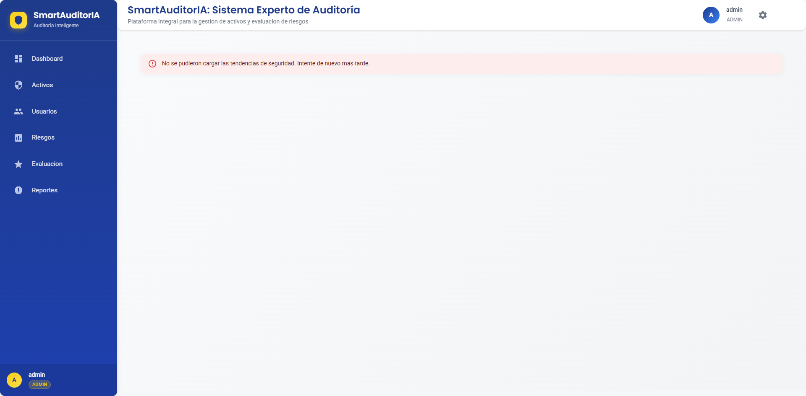
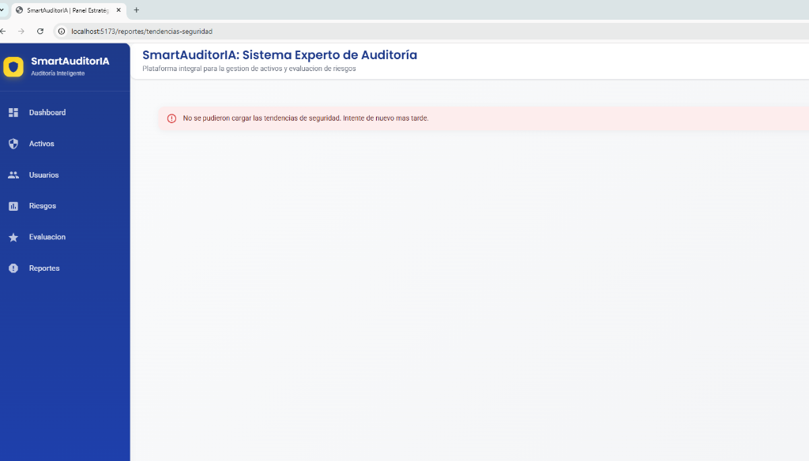
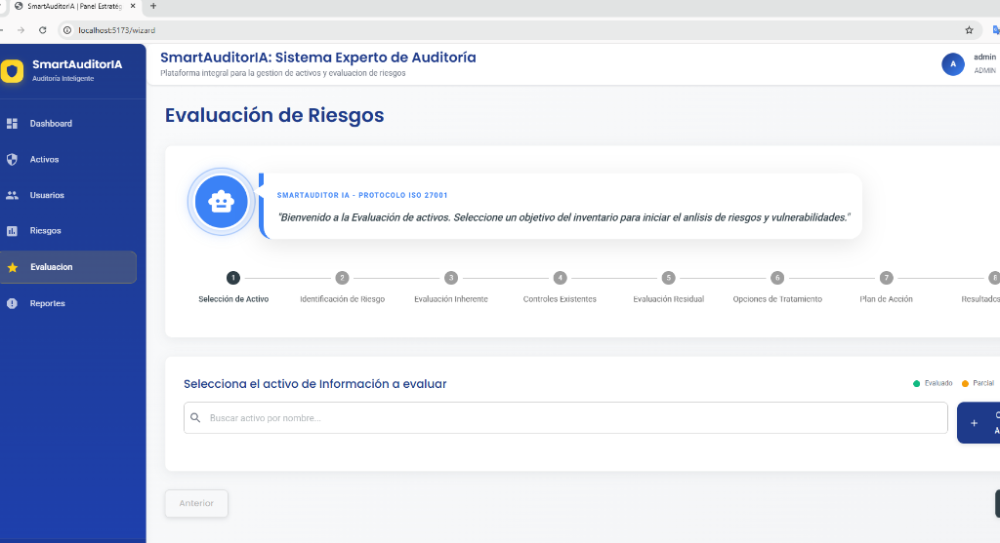
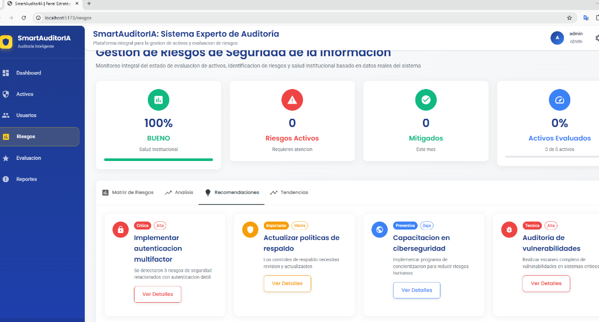

Aplicación Eficiente de Prácticas Ágiles
Durante el desarrollo de SmartAuditorIA, se han descrito y aplicado todas las prácticas ágiles planificadas en la propuesta original. Se han definido los roles clave del equipo (PO, Scrum Master, Dev), las tecnologías de vanguardia y una arquitectura de microservicios robusta que integra componentes de Inteligencia Artificial (RAG). El proyecto cuenta con historias de usuario detalladas y un Product Backlog listo para la ejecución incremental bajo el modelo ADIPD.
graph LR
subgraph Frontend_React
UI["Panel Estratégico"]
WIZ["Evaluación ISO"]
end
subgraph Backend_FastAPI
API["Core API Services"]
MIG["Data Migrator"]
end
subgraph Engine_AI
RAG["RAG Agent (GPT-4)"]
VEC[(ChromaDB)]
end
UI <--> API
API <--> RAG
RAG <--> VEC
Stack Tecnológico Implementado:
Frontend: Vite, React 18, MUI v6
Backend: Python 3.11, FastAPI, SQLAlchemy
AI Engine: OpenAI, FAISS/ChromaDB
Calidad del Product BackLog
El Product Backlog de SmartAuditorIA presenta un nivel de detalle técnico excepcional, priorizado correctamente mediante criterios de valor de negocio y con una estimación de esfuerzo completa basada en puntos de historia. Esto permite una visibilidad clara del alcance y la complejidad de cada módulo del sistema.
| ID |
User Story (HU) |
Prioridad (MoSCoW) |
Esfuerzo (SP) |
| HU-01 |
Infraestructura Base y Dockerización del Ecosistema |
MUST HAVE |
8 |
| HU-04 |
Dashboard de Salud Institucional y Matriz Estratégica |
MUST HAVE |
5 |
| HU-09 |
Motor de Inferencia de Riesgos ISO 27001 (RAG) |
SHOULD HAVE |
13 |
| HU-15 |
Generación Automática de Reportes de Cumplimiento |
COULD HAVE |
8 |
Calidad del Release Plan
Se ha diseñado un Release Plan integral para todo el proyecto, considerando todas las historias de usuario con sus respectivas fechas de entrega esperadas. Las iteraciones están balanceadas considerando los tiempos de las ceremonias Scrum y la capacidad técnica del equipo. El seguimiento se realiza mediante Jira Software, garantizando una trazabilidad total del desarrollo.
gantt
title Release Plan v1.0 - SmartAuditorIA
dateFormat YYYY-MM-DD
section Fase 1: Setup
Docker & DB Setup :2026-04-01, 7d
section Fase 2: Core UI
Dashboard & Inventory :2026-04-08, 14d
section Fase 3: AI Engine
RAG & Risk Logic :2026-04-22, 21d
section Fase 4: Final
Reports & Hardening :2026-05-13, 14d
Interfaces y Presentación de Módulos
El sistema evidencia un avance sólido mediante interfaces intuitivas y funcionales. La carga de datos desde MariaDB es operativa para los módulos de Activos, Usuarios y evaluación, permitiendo una experiencia de usuario fluida y orientada a la toma de decisiones.

Dashboard Estratégico (Poblado)

Gestión de Activos de Información

Administración de Roles y Usuarios

Asistente de Evaluación de Riesgos